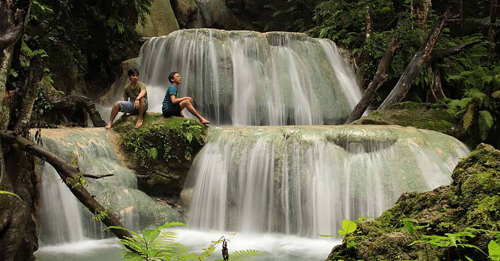

Post by Adytia, Sunday 06 Juny 2018
Kupang dan Pulau Timor yang selama ini terkenal akan panas dan mataharinya yang terik, ternyata juga memiliki oase yakni keindahan air terjunnya yang mengundang para pelancong untuk mengunjunginya.
Berjarak sekitar 13 km yaitu 10 km dari jalan besar utama dan 3 km masuk ke dalam dari Kota So’E, Ibukota Kabupaten Timor Tengah Selatan (TTS) terdapat sebuah air terjun yang keindahannya mulai menjadi buah bibir di kalangan para pejalan. Air Terjun Oehala, merupakan destinasi wajib yang harus dikunjungi apabila sedang mengeksplorasi Pulau Timor dan kota kecil So’E lebih tepatnya.
Letaknya berada di Desa Oehala, Kota So’E, Kecamatan Mollo Selatan, Kabupaten TTS, Nusa Tengara Timur. Aliran air Air Terjun Oehala ini berasal dari Gunung Mutis, maka tak diragukan lagi kesegaran dan kejernihan airnya yang berasal dari air pegunungan tersebut. Terbukti dari airnya yang terasa masih sangat alami dan bersih dengan warnanya yang hijau kebiru-biruan. Air Terjun Oehala juga sering dikenal dengan sebutan Air Terjun 7 Tingkat, karena memang air terjun ini mempunyai 7 tingkatan air terjun yang pada akhirnya bermuara di Samudera Hindia.
Meskipun memiliki debit air yang cukup besar, namun kedalaman kolam air alaminya tidak terlalu dalam sehingga pengunjung dapat menikmati setiap tingkatan kolam alaminya dengan sekedar berfoto-foto ria, berenang ataupun bermain air. Dikelilingi oleh rindangnya pepohonan hijau yang menjulang tinggi dan letaknya yang memang berada di tengah-tengah hutan, membuat suasana di kawasan air terjun ini semakin asri dan sejuk.
Akses untuk menuju wisata Air Terjun Oehala ini cukup mudah, pengunjung dapat menyewa kendaraan/ menggunakan kendaraan pribadi dari Kupang ataupun dari So’E. Apabila memulai perjalanannya dari Kupang, maka arahkan kendaraan ke Kota So’E dengan jarak 110 km (kurang lebih 3 jam lama perjalanan) menuju arah Kota Kapan ±10 km (±0,5 jam). Atau bagi para traveler muda yang ingin menghemat ongkos dapat menggunakan bus dengan tujuan Kupang - Kefamenanu/ Kupang - Atambua lalu minta diturunkan di pertigaan yang menuju Kota Kapan (±3,5 jam) kemudian dilanjutkan dengan naik ojek sampai ke lokasi Air Terjun Oehala (± 45 menit). Kondisi jalan di sepanjang jalan menuju kawasan Oehala beraspal mulus, hanya beberapa titik aspal yang terlihat berlubang namun tidak terlalu menghambat perjalanan.
Sesampainya di area parkir lokasi wisata, pengunjung akan disuguhi jajaran warung kecil yang menjajakan berbagai macam makanan dan minuman ringan. Namun disarankan untuk membawa/ membeli bekal makanan maupun minuman sebelumnya dari kota agar harganya lebih miring jika dibandingkan membeli di warung yang berada di lokasi wisata. Selanjutnya untuk menuju spot utama Air Terjun Oehala, pengunjung harus menyiapkan sedikit tenaga ekstra dan penuh hati-hati karena pasalnya terdapat 132 anakan tangga berkelok-kelok yang harus dituruni sebelumnya. Kurang lebih 10 menit berjalan kaki lamanya menuruni anakan tangga, pengunjung akan disambut oleh pesona indahnya air terjun 7 bertingkat ini.
Dengan biaya masuk per-orangnya yaitu sebesar 3.000 rupiah saja, pengunjung sudah dapat menikmati pesona Air Terjun Oehala yang keindahannya sampai disandingkan dengan Air Terjun Mata Jitu di Pulau Moyo.
Namun sayangnya fasilitas yang terdapat di kawasan ini terihat kurang terawat dan terjaga. Hanya terdapat beberapa lopo (tempat istirahat khas Timor beratapkan daun jerami), beberapa toilet dan ruang ganti seadanya saja. Meskipun demikian, keindahan lanskap Air Terjun Oehala ini berhasil menutupi segala kekurangannya dan membuat para pengunjungnya betah berlama-lama menikmati segarnya aliran airnya. Bagi kalian para penikmat wisata alam, Air Terjun Oehala wajib masuk ke dalam daftar tujuan wisata Anda saat berpetualang menjelajahi alam Pulau Timor, NTT. [Anggey/IndonesiaKaya]
Sumber : https://www.indonesiakaya.com/jelajah-indonesia/detail/menikmati-segarnya-air-terjun-7-tingkat-oehala-kota-soe